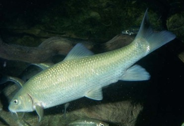

Pez de río de agua dulce.
Tiene barbillas cerca de la boca que le ayudan a encontrar comida en el fondo.
Se alimenta de insectos, larvas y pequeños invertebrados.
Prefiere aguas limpias y con corriente.